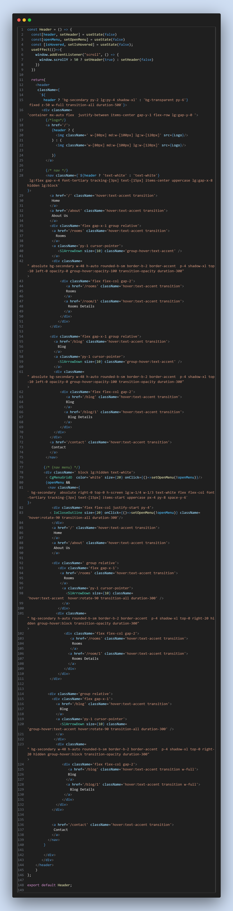

At the heart of this template lie its components, the building blocks that seamlessly integrate to form a cohesive and dynamic user experience. Each component serves a specific purpose, whether it's showcasing luxurious accommodations, facilitating effortless reservations, or engaging guests with captivating visuals and informative content. We have various types of components that range in:
The Header component represents the navigation bar at the top of the website. Here's a breakdown of its structure and functionality:
The component uses the useState hook to manage state variables header, openMenu, and isHovered. header controls the appearance of the header based on the scroll position. openMenu controls the visibility of the mobile menu. isHovered tracks whether a dropdown menu item is being hovered over.
The component uses the useEffect hook to add an event listener to the window's scroll event. When the user scrolls down more than 50 pixels, the header background changes to a solid color with a shadow, creating a sticky header effect.
The header contains a logo on the left and a navigation menu on the right. The navigation menu consists of links to various pages of the website such as Home, About Us, Rooms, Blog, and Contact. The navigation menu is responsive, adapting its layout for desktop and mobile screens.
There are dropdown menus for the Rooms and Blog links in both the desktop and mobile versions. On desktop, hovering over these links reveals the dropdown menus. On mobile, clicking/tapping on these links reveals the dropdown menus.
The mobile menu is hidden by default and can be toggled open/close by clicking on the menu icon (three horizontal lines) on the right side of the header. When the mobile menu is open, it covers the entire screen and displays navigation links vertically.
The component utilizes Tailwind CSS classes for styling, including colors, padding, margins, and flexbox layout. Transitions are applied to animate changes in the header background color and the opening/closing of the mobile menu.
Each navigation link is an anchor () element with an href attribute pointing to the corresponding page. The links change color on hover, providing visual feedback to the user.
There are arrow icons next to the dropdown menu items, indicating that they have sub-menus. The icons rotate when the corresponding dropdown menu is opened, providing visual feedback to the user.
Overall, the Header component provides users with easy navigation options and adapts its layout for both desktop and mobile devices, enhancing the user experience across different screen sizes.
As can be seen in the above illustratin, the header component contains two sections,one for small devices and one for large devices that is toggled by a menu icon. Customization is easy since you can change the routes to your preferences along with the Logo design when its transparent and when the background has a different color
To customize the `AOS.init()` function and the `HeroSlider` component, follow these steps:
`duration`:Adjust the duration of animations. Set it to the desired value in milliseconds.
`loop`:Enable or disable looping of animations.
`once`:Determine whether animations should only occur once or every time an element enters the viewport.
`offset`:Set the offset (in pixels) from the top of the viewport at which animations trigger.
`easing`:Enable or disable easing for animations.
For customizatin purposes
The `BookForm` component is a form used for booking a room. It consists of input fields for check-in date, check-out date, number of adults, and number of kids, along with a button to submit the form. Here's a summary of its structure and functionality:
- The component renders a `form` element with a specified height and width. - Inside the form, there's a flex container (`div`) with a row layout for organizing input fields and the submit button.
- Four input fields are included, each representing a different aspect of the booking: - Check-in date: Rendered using the `CheckIn` component. - Check-out date: Rendered using the `CheckOut` component. - Number of adults: Rendered using the `AdultsDropdown` component. - Number of kids: Rendered using the `KidsDropdown` component. - Each input field is wrapped in a `div` with a flexible width (`flex-1`) and a right border to separate them.
- A submit button is included at the end of the form. - The button triggers the `handleClick` function when clicked, which is retrieved from the `RoomContext`. - The `handleClick` function is called with the event object (`e`) as an argument, allowing for further processing of the form submission.
- The `handleClick` function is accessed from the `RoomContext` using the `useContext` hook. - This function likely contains logic for handling the form submission, such as validating input data and initiating the booking process.
- The `onClick` event handler is attached to the submit button, triggering the `handleClick` function when clicked. - The event object (`e`) is passed to the `handleClick` function, providing access to information about the event, if needed.
Its made up of:
Requires little to no customization if the theme is customized.Its also ready for any further functinality that may require the backend
This is a component serves as a flexible element that can be used to add spacing or visual breaks between other elements in a React application's UI. Its height can be adjusted by modifying the Tailwind CSS classes applied to it, providing developers with a convenient way to control its appearance.
The `ArrowUp` component renders a button that appears at the bottom-right corner of the screen when the user scrolls down, allowing them to quickly scroll back to the top of the page. Here's a summary of its structure and functionality: By providing users with a convenient way to return to the top of the page, the `ArrowUp` component enhances the user experience, especially on pages with lengthy content.
The component uses the `useState` hook to manage the `header` state, which determines whether the button should be displayed based on the user's scroll position.
- The `useEffect` hook is used to add a scroll event listener to the window. - When the user scrolls, the event listener updates the `header` state based on the scroll position. If the scroll position is greater than 50 pixels, `header` is set to `true`; otherwise, it's set to `false`.
- The component conditionally renders the button based on the value of the `header` state. - If `header` is `true`, indicating that the user has scrolled down, the button is rendered. - If `header` is `false`, indicating that the user is at the top of the page, an empty fragment is rendered.
- When the button is clicked (`onClick` event), the `window.scrollTo` function is called to scroll back to the top of the page (coordinates `{0, 0}`).
- The button is styled and positioned using Tailwind CSS utility classes. - It's fixed to the bottom-right corner of the screen (`fixed bottom-8 right-8`). - The `z-50` class ensures that the button appears above other content on the page.
Other components majorly require change in theme, content, and images which can be done as depicted in their respective menus